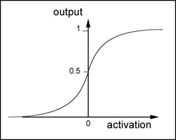
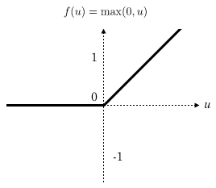

前言
一、基础知识
1. 名词解释
- 激活函数，神经元接收外部参数后通过加权和或者其他算法，处理最后结果的函数，常见的有sigmoid和relu等
- FNN，前馈神经网络（全连接神经网络）
2. 几种激活函数
sigmoid函数
$$
sigmoid(x) = \frac{1}{1 + e^x}
$$
- 全连接神经网络最常见的激活函数一般为sigmoid函数，它的特性是导数和函数本身一样
- 一般不用于较深的神经网络，由于反向传播算法越深训练难度越大，梯度下降更小
relu函数
一般用于卷积神经网络，可用于训练较深的神经网络，其在反向传播算法中梯度下降稳定
二、感知器
描述

- 很简单，就是一个神经元。神经元接收外部输入，输出数据。
- 一般预测就是真或者假，所以一般输出为0或者1
- 外部输入就是外部环境，可能有多个数（生活数据化），内部处理就是最简单的加权和: $w_1x_1 + w_2x_2 + … + w_nx_n$
- 想要输出为0或者1，只通过加权和一般得不到，但是呢，人总是想大于某个值为1，小于为0。转化一下就是激活函数:
$$
f(x) = \left\{\begin{array}{ll}
1 & {x > 0} \\
0 & otherwise
\end{array}\right
$$
训练
- 最简单的数学，达不到目标，差值乘以输入，整体乘一个系数防止过拟合
$$
\begin{aligned}
w_i & = w_i + \eta (result - predict)x_i \\
b_i & = b_i + \eta (result - predict)
\end{aligned}
$$
自己想法
- $w_i x_i$其实就是一条直线，二维比较好想，就是二元一次函数。在直线上就是
ax + by + c > 0 - 感知器其实就是在无数个点中找到一条直线，在0和1的判断中就是将点分开在两侧
- 如果是$f(x) = x$的激活函数，就是尽可能让所有点到直线距离最短（回归函数）
三、梯度下降算法
描述
主要是讲如何训练感知器，知道感知器不知道怎么训练可不行。
- 算法原理很容易解释，想要达到期望值，需要使
result - predict尽可能的小，然而有正有负，就取个平方$(result - predict)^2$。 - 尽可能小就是让它在每次训练不断下降，也就是变量要向减小的方向走。导数就代表函数运行方向，所以求导，让当前值减去导数。
- 当然不能直接减，要柔和的下降，防止跑远了（说人话，乘以一个系数，也就是训练力度）。经过各种计算到最后，得到和上面训练函数完全一样。
$$
\begin{aligned}
w_i & = w_i + \eta (result - predict)x_i \\
b_i & = b_i + \eta (result - predict)
\end{aligned}
$$
BGD和SGD
- 我们进行训练时需要用到损失，如果一个数据算一次损失进行训练，叫做随机梯度下降SGD
- 如果算一批数据进行训练，叫做批梯度下降BGD
四、神经网络
1. 描述

- 神经网络就是多了神经元相互连接形成的一个网络
- 输入层有几个输入就有几个神经元
- 输出层有几个输出就有几个神经元
- 隐藏层则是自己定有几层有几个神经元
- 算法先用梯度下降算法进行推导，之前推导过，各种求偏导，从输出层开始向前训练，所以又叫反向传播算法，公式就不列了
- 实现就比较复杂了，我们了解其中的原理就好了，毕竟不同的激活函数就对应不同的算法
- 使用tensorflow可以帮你写好各种训练函数，只需要配置就好，这里是使用全连接神经网络计算minst手写数据集的实例
2. 训练公式
权重训练公式
$$
w_{ji} \leftarrow w_{ji} + \eta\delta_{j}x_{ji}
$$
- $\eta$ 为学习速率
- $\delta$ 为偏差
对于输出层
$$
\delta_i = y_i(1 - y_i)(t - y_i)
$$
- $y_i(1 - y_i)$ 为sigmoid函数的导数
对于隐藏层
$$
\delta_i = a_i(1 - a_i)\sum_{k \in outputs}w_{ki}\delta_k
$$
- $a_i$ 为当前节点的输出值
- 通俗讲，下一级的偏差加权和就是当前的输出和期望的差值
五、卷积神经网络

- 卷积神经网络更多是处理图像
1. 全连接网络处理图像的局限
- 参数太多，一个图片的像素点做全连接，对于高清图片，参数指数级增长
- 没有利用图像各个像素之间的位置关系
- 层数限制，无法表达更多的信息，一般很难使用超过3层的网络
2. 卷积网络的优势
- 局部连接，卷积使得每个神经元仅和一部分神经元连接，减少很多参数
- 一组连接共享一个权重，减少参数
- 下采样 可以使用Pooling来减少每层的样本数，进一步减少参数数量，同时还可以提升模型的鲁棒性。
3. 描述
- 卷积神经网络可以由若干卷积层、pooling层、全连接层组成，常用架构
INPUT -> (CONV * N -> POOL?) * M -> FC * K - 每层神经元排列是三位结构，长度宽度对应图片的长宽，高度对应不同filter，每个filter会生成一个Feature Map
- 每一层对应几个filter是一个超参数，每个filter对应一个特征
- POOL层是对Feature Map做下采样得到更小的Feature Map
总结
- 图像使用卷积神经网络效果更好
- 语言补充使用长短时记忆神经网络更好
- 语义分析就需要使用递归神经网络来处理